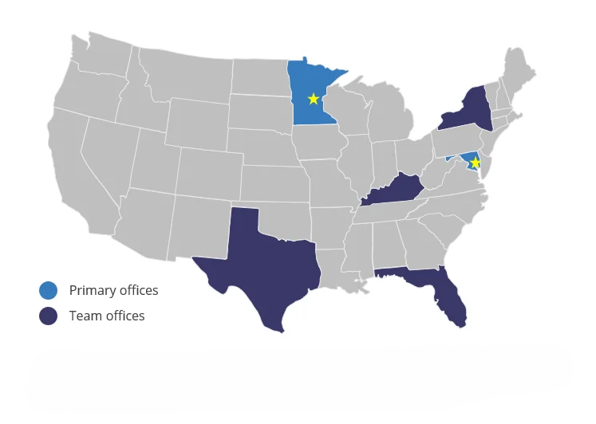

PLATFORM PARTNERS LLC
STOCADVISORY
Transaction Advisory | Corporate Development | Growth Enablement
Platform Partners operates across Business Services, Healthcare, Financial Services, Energy, and Industrial sectors. We've completed over 200 transactions across diverse industries and understand how perpetual capital platforms evaluate and integrate acquisitions.
MULTI-SECTOR BUY-AND-BUILD
Managing Diverse Portfolio Companies
Running 18+ platforms simultaneously across unrelated sectors means each deal requires different expertise. Healthcare staffing diligence looks different from financial services technology. Pipeline management businesses have different customer dynamics than HCM platforms. You need advisors who can shift between sectors without applying cookie-cutter templates.
What Generic Diligence Misses
Standard QoE providers struggle with the range. They don't know whether customer concentration is normal in managed services versus financial technology. They can't assess whether recurring revenue in healthcare staffing is comparable to subscription models. They miss sector-specific risks because they're following a template designed for traditional PE portfolios.
Breadth of Experience
We've completed over 200 deals across Business Services, Healthcare, Financial Services, Energy, and Industrial sectors. Our team understands the economics of labor-driven businesses, asset-liability management platforms, field service operations, and provider-led healthcare models. We can evaluate add-ons across your entire portfolio without needing sector-specific education for each deal.

Global team of 30+ professionals with primary offices in Baltimore, MD and Edina, MN.
SECTOR EXPERIENCE ACROSS YOUR PORTFOLIO
Business Services
We've worked with HCM platforms, payroll processors, managed services providers, and labor-driven businesses with recurring revenue models. We understand unit economics in staffing, margin drivers in payroll processing, and the difference between contractual and habitual recurring revenue.
Healthcare Services
Experience with healthcare staffing, provider-led services, and healthcare technology platforms. We can assess clinician retention models, reimbursement dynamics, and regulatory compliance requirements that affect valuation and integration.
Financial Services
Background in asset-liability management, payments processing, and specialized financial technology. We understand interest rate sensitivity, regulatory capital requirements, and the economics of transaction-based revenue models.
Industrial & Energy
Work with pipeline management, water solutions, field services, and specialty industrial operations. We can evaluate project-based revenue sustainability, equipment utilization rates, and the shift from capital projects to recurring maintenance contracts.
CORPORATE DEVELOPMENT, DILIGENCE, AND POST-CLOSE SUPPORT
01
Target Identification Across Multiple Sectors
Finding add-ons for a perpetual capital portfolio means building target lists across unrelated industries simultaneously. Healthcare staffing companies in the Southeast, payments processors in the Midwest, and field service businesses in energy markets all require different research approaches.
We build sector-specific target lists from trade associations, industry databases, and market research. For business services platforms, that means finding regional players before they hit the broker market. For financial services, identifying specialized technology providers with defensible niches. You get months of lead time to build relationships before deals are broadly marketed.
02
Multi-Sector Financial Diligence
Quality of earnings for a healthcare staffing business is different from a payments processor. Revenue quality in field services doesn't look like HCM platforms. Generic providers miss sector-specific nuances because they're applying the same framework everywhere.
Our team has completed over 200 deals across your portfolio's sectors. We understand what normal margins look like in labor-driven businesses versus asset-light technology platforms. We can assess whether recurring revenue models are contractual or just customer habit. We identify what's risky versus what's standard for each sector.
03
Operational Support Across Portfolio Companies
Perpetual capital portfolios need ongoing support, not one-time diligence. Portfolio companies require help with integration planning, performance tracking, and operational improvements that continue well beyond closing.
We stay engaged. Integration planning for add-ons, KPI tracking tailored to each business model, and operational support from people who understand the differences between labor-driven services, asset-based businesses, and technology platforms. We're there when you need to diagnose performance issues or support portfolio company leadership teams.